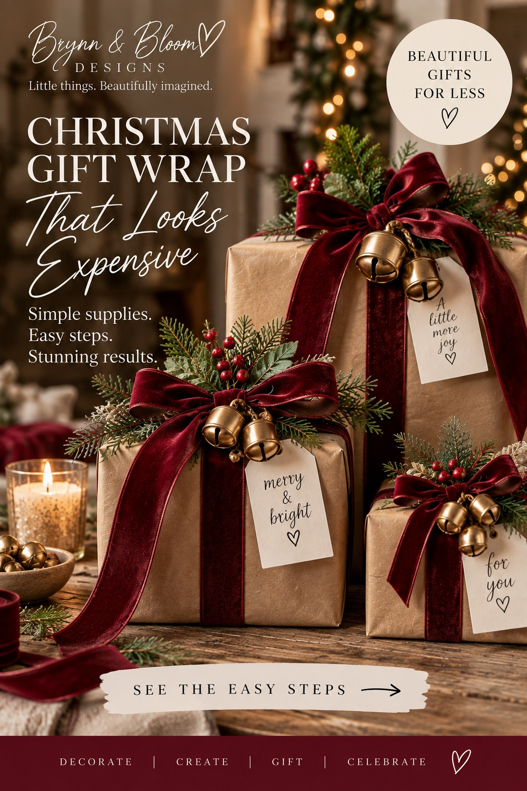
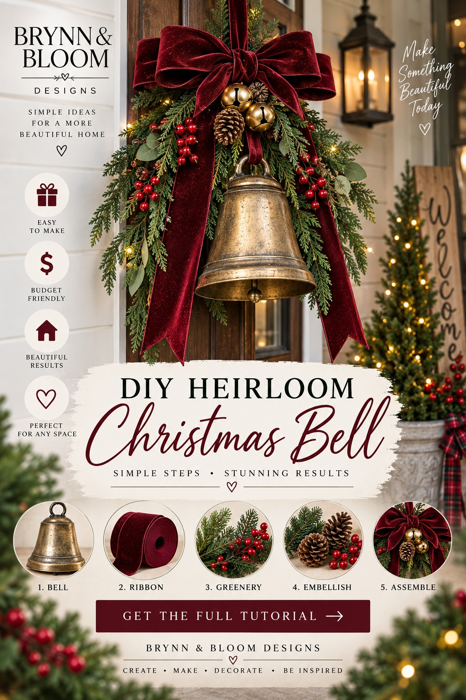

Bigger magic. ♡
 ChristmasDécor, DIYs & moreEXPLORE →
ChristmasDécor, DIYs & moreEXPLORE → PartiesBirthdays, showers & moreEXPLORE →
PartiesBirthdays, showers & moreEXPLORE → GiftsThoughtful ideas for every occasionEXPLORE →
GiftsThoughtful ideas for every occasionEXPLORE → HomeDecorate & make it yoursEXPLORE →
HomeDecorate & make it yoursEXPLORE → SeasonalFall, holidays & beyondEXPLORE →
SeasonalFall, holidays & beyondEXPLORE →for real life♡ Budget-friendly
ideas♧ Shop the supplies
on Amazon❧ Simple steps
anyone can do♧ Celebrate, decorate,
gift & create
THE BRYNN & BLOOM EDIT
Ideas to make your own ♡
Little transformations that feel special—and start with ordinary supplies.

Mason Jars → Christmas Village Lanterns
Three saved jars become glowing miniature winter scenes with a church, truck and deer.
VIEW THE IDEA →
Cutting Boards → Christmas Sign Trio
Three simple boards become rustic Christmas signs with a vintage truck, trees and festive bows.
VIEW THE IDEA →
Wood Ornaments → Gift Card Holders
Scrap fabric pockets turn plain wood ornaments into thoughtful Christmas gifts.
VIEW THE IDEA →
Glass Bottles → Christmas Centerpiece
Three saved bottles glow with fairy lights, snowy greenery and festive bows.
VIEW THE IDEA →
Wine Glasses → Magical Christmas Display
Three upside-down glasses become glowing miniature Christmas snow globes.
VIEW THE IDEA →
Embroidery Hoop → Christmas Bell Wreath
Three antique bells, velvet ribbon and evergreen transform a plain wooden hoop.
VIEW THE IDEA →
Glass Hurricane → Christmas Centerpiece
A flameless candle, evergreen and burgundy velvet make a stunning holiday display.
VIEW THE IDEA →
Thrifted Mirror → Christmas Vignette
Evergreen, a velvet bow and flameless candles create a warm holiday focal point.
VIEW THE IDEA →
Two-Tier Tray → Christmas Centerpiece
Miniature village accents, plaid ribbon and evergreen transform a simple tray.
VIEW THE IDEA →
Picture Frame → Christmas Village
An ornate frame becomes a glowing miniature winter scene with a snowy church and trees.
VIEW THE IDEA →
Glass Jar → Glowing Christmas Village
A snowy miniature house, little tree and warm lights make a magical jar centerpiece.
VIEW THE IDEA →
Thrifted Lantern → Christmas Centerpiece
Velvet ribbon, flameless candles and evergreen turn a plain lantern into a festive focal point.
VIEW THE IDEA →
Empty Tin Can → Christmas Luminary
Save a can and turn it into a glowing snowflake decoration with velvet and greenery.
VIEW THE IDEA →
Cutting Board → Christmas Sign
Paint, plaid ribbon and greenery turn a plain board into festive farmhouse décor.
VIEW THE IDEA →
Mason Jar → Snowman Gift
A plain jar, marshmallows and plaid scraps become an adorable Christmas surprise.
VIEW THE IDEA →
Crayon Box → Beautiful Teacher Gift
A simple carton, plaid paper and ribbon become a thoughtful holiday surprise.
VIEW THE IDEA →
DIY Wooden Block Nativity
Plain blocks and beads become a meaningful handmade Christmas keepsake.
VIEW THE IDEA →
DIY Christmas Gift Basket
A cozy, personal gift with cocoa, treats and velvet ribbon.
VIEW THE IDEA →
Elegant DIY Christmas Place Settings
Use dishes you already own and add little velvet details.
VIEW THE IDEA →
DIY Christmas Simmer Pot Gift Jars
Dried citrus, cozy spices and beautiful velvet bows for gifting.
VIEW THE IDEA →
DIY Vintage Christmas Ornaments
Antique-gold finishes and little burgundy velvet bows.
VIEW THE IDEA →
Boutique-Look Christmas Gift Wrap
Kraft paper, burgundy bows, greenery, berries and gold bells.
VIEW THE IDEA →
The Heirloom Christmas Bell
A large aged-brass bell, velvet bow, greenery, berries and pinecones.
VIEW THE IDEA →
The Layered Designer Mantel
Make simple garland look beautifully full.
VIEW THE IDEA →
The Vintage Village Refresh
Give mismatched little houses a shared palette.
VIEW THE IDEA →
The Florist-Style Centerpiece
A lush Christmas centerpiece with velvet, greenery and flameless candles.
VIEW THE IDEA →Photographs on collection cards are styling inspiration, not representations of exact Amazon products or completed Brynn & Bloom projects. Our original project tutorials explain how to create similar looks.
Let's Stay Inspired! ♡
Little things. Beautifully imagined.
Creative ideas for thoughtful gifts, parties, seasonal magic and home—without the designer price tag.
FOLLOW ON PINTEREST →“It’s the little things
that make life beautiful.”— Brynn & Bloom